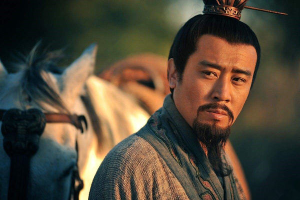

三国志异 读后总结
摘抄
虽然击败颜良文丑，但曹操其实是撤军的，撤到了官渡。
袁家真正的完蛋，还在于袁绍的死，在于袁家的继承权争议。
当初袁绍和曹操论天下时，袁绍强调要得地利，占领河北，无往而不利。太祖爷则说他要“任天下之智力”。曹操一开始就明白，人比地方重要。袁绍就吃亏在地方太大，属下太杂，而曹操就成功在任天下之智，重点在人。
赵云无论史实还是演义，都是高大雄伟、浓眉大眼、大脸双下巴，燕赵悲歌慷慨的河北汉子，并非小白脸。拿武侠小说打个比方：他的容貌更接近萧峰，而不是段誉。
按照史书上赵云活动的时间计算，长坂前后，他也有将近四十岁了，是一条威武的河北大叔，绝非许多人想象中的白袍小将就是了。
战国时，全民皆兵，所动的兵力数字，基本等于可征发的壮丁，包括大批非战斗人员，所以显得多，动不动就几十万。三国时期，至少还有部分是兵农分离，所以史书上，兵力显少。
如果将中国画为一个井字形，分为九格，四个角分别是右上角河北、左上角关中、左下角巴蜀和右下角江东，四条边分别是左边汉中、右边山东、上边山西、下边两湖，中间则是河南，是天下中央。
历代强大势力，大多割据四个角，比如秦起于左上角关中，西汉起于左下角巴蜀，东汉起自右上角河北，三国时吴蜀分别占了左下角巴蜀和右下角江东。唐朝起初是山西起兵后，立夺关中，明朝起自右下角的江淮。
四个角比如关中河北、川中江东都是割据地，所以长安北京、四川南京这类古都，都在这里；四条边比如汉中山东、山西两湖，大多是战略要地，所以没有名都，却多名战场。河南是天下之中，所以东汉北宋都定都于此。
夏侯惇是可以随意出入曹操卧室的。
彼虽亲重，外籓也。褚备内臣，众谈足矣，入室何私乎？
兄弟跟兄弟，那也是不同的。
到最后，三国真正靠得住的情谊，不是血缘兄弟，而是意气相投。
先主与二人寝则同床，恩若兄弟。而稠人广坐，侍立终日，随先主周旋，不避艰险。
关羽与备，义为君臣，恩犹父子；羽死不能为兴军报乱，于终始之分不足。
他们谁都想不到，自己会在困顿大半生后，在未来十三年，创立三分天下的奇迹，他们这时还窝在一个县城，两个万人敌，一个枭雄姿。
一心算计的诸侯们最后身死国灭，两个最初都没什么野心的热血青年最后开疆裂土。
夏侯渊的死类似于关羽之死比之荆州归吴，官渡之战之比曹兴袁衰，赤壁之战奠定三分格局，是一方大事。三国历史上，类似的“一个将领的死亡代表着一方区域归属”的，差不多就关羽和夏侯渊两个人。
曹操时期，诸将是分等级的。曹操本家的夏侯惇、夏侯渊、曹仁、曹洪，这算是几个方面将领，是司令。下面又有五子良将，即张辽、乐进、于禁、张郃、徐晃，又有李典、朱灵、吕虔、李通等诸将。
姜维是个不在乎日常生活欲求的，彻底的理想主义者。
这是曹魏大乱的时候，但蒋琬和费祎都没太把握住机会。姜维秉政时，面对的是已经稳固了、大致掌握了政权、可以擅自废立的司马氏了。
姜维，一个五十二岁的陇西降将，和蜀汉内部关系也算不上太融洽。他有才华，私德也没什么可挑剔的，落在他手里的，则是一个连诸葛亮都无法逆转的大局面，以及朝内不断的斗争。曹魏那边也在诱惑他投降。
这么个局面，到最后，蜀汉终于也没亡在姜维手里－－魏国三路大军压境，两路专门来对付他。姜维身在沓中，被邓艾围裹阻拦，到底还是虚晃一枪，杀过了阴平桥、晃过诸葛绪、回到剑阁、守住了钟会。那时，他一个人，一支军队，几乎把魏国的西征计划摧毁了大半，逼得邓艾行险侥幸，偷渡阴平。
愿陛下忍数日之辱，臣欲使社稷危而复安，日月幽而复明。
最后众所周知：计策未成，但一日之内，姜维拖死了钟会、邓艾和他自己，好歹也算是，熬到了蜀汉的最后一刻，然后以身殉之。
仅论执着与刚烈，姜维实在还胜过诸葛亮。
他没有诸葛亮那么大气，但不失为一个死士：无欲无求，只是朝着自己的目标冲刺。
后世眼中，前三国所以比后三国传奇，不在于后三国人才凋零：实际上，后三国极多问文武全文武全才的人物，但大多都太聪明。
姜维之杰出，未必在才情－－虽然钟会也承认他了不起－－只是他的行为做派，有前三国时，那些屈而不挠、执着至极、燃烧至死的性格光彩。
姜维死，汉亡。
曹大司马之勇,贲、育弗加也。张辽其次焉。
如果是猛将的名声，关羽张飞曹仁张辽吕布们各有所长。
如果论表现，关羽（万军斩将）、张辽（合肥奔袭）俩人独出众。
这段确实尽显曹操关羽，二位当世英雄的大气派，史书原文如此，千秋耿耿。关羽来去雍容，有春秋战国时国士之风；曹操在此时也尽显大度。君臣各尽礼节，各自成全一段佳话。
但还原历史，当你发现正史之中，其实只有关羽，真的曾万军披靡、斩过对方大将后，就明白他独一无二的分量了。
"单刀"二字，是形容主帅们没带多余兵器。是风度礼节，而非逞一时武勇。
鲁肃“体貌魁奇，少有壮节，好为奇计”，是个体格到内心都很凶猛的男子汉。
汉末华夏，天下十三州。能威震华夏者，只有一人。能以一方偏师令中原震荡者，只有一人。能以一身牵系三国这一页的，只有一人。
熊虎之将、万人敌、好学、能背诵《左传》、有英雄气、讲义气、国士之风、蜀汉唯一的名将。
围困了曹仁、干掉了于禁、对抗着徐晃，逼着曹操谋划迁都，而在他背后，还有整个东吴在捅他刀子。对付他的，除了孙权，还有吕蒙和陆逊这两位大都督级的人物。
所谓蜀汉“名将唯羽”，或者可以换种说法：当时，他是刘备之外，蜀汉的另一镇诸侯－－至少曹操和吕蒙，都是这么看待他的。他是万人敌的猛将，威震华夏的刚直汉子，喜好《春秋》的国士，以及“义”这个字。在那个时代，“义”是一种游侠风范，是太史公《刺客列传》《游侠列传》里那些刚正侠义的汉子们。在关羽之前，从未有一个武将，能在同一个时代，将个人勇武和侠义刚直，结合得如此完美，而且终于缔造了他的辉煌（威震华夏）和倒下（刚直自负）。
在水淹七军前，于禁是曹操手下，非本家的第一将军，所谓外姓第一将。
于禁最号毅重，然弗克其终。
张辽的做派，那就是“一与一，勇者得前”。
貂蝉。正史里无此人，凤仪亭一节也是虚构，又是后世戏曲小说新加的，罗贯中也只是拿来借用。
正史的吕布，是有勇无谋、反复无常、唯利是图、短视浅见的乱世不安定因素军阀。
夏侯渊死于定军山刘备指挥的黄忠所部，于禁被关羽擒住，张郃死于诸葛亮之手。
而诸葛亮在蜀汉开国时，直接就是丞相。他的才具，到哪里都遮不住。
怎么这山东青年说的那些话，听着也没什么，可是十二年来，一步步都实现了呢？
三国两位最大的人物，曹操与诸葛亮，都是法家。
闻恶必改，而不矜过，赏罚之信，足感神明。
刘备死前，诸葛亮是没有开府权的，也可以说，没有自己的一套班子。
先主之弘毅宽厚，知人待士，盖有高祖之风，英雄之器焉。及其举国讬孤於诸葛亮，而心神无贰，诚君臣之至公，古今之盛轨也。
政权的存续比血脉的存续更重要。
某种程度上，几乎可以说：诸葛亮是刘备真正的儿子－－只是没有血缘关系而已。
刘备对得起他，他也对得起刘备了。
曹操手下谋士刘晔，那是地道的皇叔，比刘备后台硬多了。
张良韩信都说过，肯跟刘邦的，许多都是好利益之人。被骂骂，无所谓；给实在的利益就行。虽然项羽手下许多是君子，刘邦手下许多是好利之人，但世上，永远是好利益的人比君子多。
幸亏周瑜鲁肃死得早，不然未必不是陆逊和张昭的下场。
《三国志》列次叙传，《魏书 荀彧荀攸贾诩传第十》将他、他侄子荀攸和刚才提到的贾诩，合传列为曹操首席三大谋士。
东汉的士族，多出汝南和颖川两地。汝南是袁绍家为尊，所谓四世三公，代代都是要进中央的；荀氏则是颖川帮的大家。荀彧和沮授，几乎同时提出迎立汉献帝的主旨，在迎了汉献帝后，荀彧成了尚书令，即天子的秘书。
可以说，荀彧等于是汉献帝与曹操之间的一道桥梁。
某种程度上，荀彧已经不是曹操的谋士，而是曹操的合伙人。
以仁义救天下，天下既平，神器自至，将不得已而受之，不至不取也，此文王之道，文若之心也。及操谋九锡，则文若死之，故吾尝以文若为圣人之徒者，以其才似张子房而道似伯夷也。
《三国志》里，荀彧是魏的谋臣。《后汉书》里，范晔却是将荀彧当汉臣对待。他是魏国第一谋臣还是汉朝最后的谋臣，历代史家争论不休。
三国三大势力，各有著名谋臣。曹魏列传，则荀彧居中为相，香喷喷好脸蛋好人缘，侄子荀攸为谋主，后来则是贾诩。程昱、郭嘉、刘晔等负责谋断。
季汉那边，则诸葛亮为相。陈寿认为：庞统接近于荀彧，法正接近于程昱、郭嘉，差不多的意思。
谈论谋士，则诸葛亮、荀彧、张昭三位怕得单独划开。因为这几位运筹帷幄、军政纵横、日理万机统筹人事，已经不单是出谋划策了。虽然曹操说，荀彧是他的张良，但荀彧的实际权力作用，已近于萧何。
若法孝直在，则能止上令不东行；就复东行，必不倾危矣。
就像诸葛亮归隐南阳前，在山东的少年时期，多半见识过曹操屠城。
他非常现实，和贾诩一样现实，深明人心的脆弱所在；他不相信虚名，鄙视普通人，就像一切愤世嫉俗的天才；他有郭嘉级的恐怖判断力和口才，所以刘备无法拒绝他的提案。
也许这就是刘备一直喜爱的、也希望自己成为、却始终无法成为的，另一个自己。
荀彧比他侄子还小六岁，但太有名，于是许多人把荀攸的事儿归到他叔叔头上了。
自己辅佐过的主子纷纷完蛋，但独善其身，最后位居三公，活到七十七岁，完美。
且攸、诩为人，其犹夜光之与蒸烛乎。
郭嘉跟荀攸与贾诩两位比，更偏向判断型。
而且，郭嘉很懂曹操的心，这是他独一无二的所在－－一如法正也很懂刘备的心似的。
曹操麾下的谋士，荀彧、荀攸、贾诩之后，就是他了。序传排名，还在郭嘉之前。
诸葛亮负责光明正大，庞统负责雅好人流，法正辅佐谲计诈谋。
荀彧负责清秀通雅，贾诩负责离间挑拨，郭嘉负责铁口直断。
总结
刘备 折而不挠，终不为下

刘备的形象与演义的差别应该还是很大的。乱世之中，一个只会哭的老好人可聚集不起那么多人才。特别是像关羽这种武圣，诸葛亮这种智圣，跟随刘备一生，鞠躬尽瘁，只靠哭肯定是搞不定的。周瑜称刘备有“枭雄之姿”，曹操称刘备“天下英雄，使君与操”，可见一斑。
先主最好的兄弟跟自己没有血缘关系，而他真正的接班人孔明跟自己也没有血缘关系。乱世之中，相比杀得人头滚滚的亲缘关系，志同道合反而更加坚固。
陈寿对刘备的评价已经很到位了。
"先主之弘毅宽厚，知人待士，盖有高祖之风，英雄之器焉。"
志向高远，知人善任，有刘邦的风格，当之无愧的英雄。“聪明秀出，谓之英；胆力过人，谓之雄”。直到47岁，奋斗了大半辈子，眼看着大乱的天下势力逐渐明晰，自己却只能窝在一个小县城里。然后三顾茅庐，去拜访比自己小二十岁的卧龙。之后一发不可收拾，十三年后称帝，三分天下。之后关羽被东吴捅刀子，“关羽与备，义为君臣，恩犹父子；羽死不能为兴军报乱，于终始之分不足。”。刘备就是这么个人，不是一个理性的政治家，但也正因为其“刘郎才气”，才能团结得了这么多英雄人物在他的周围。
"及其举国讬孤於诸葛亮，而心神无贰，诚君臣之至公，古今之盛轨也。"
国家权力交接完成的非常顺利。他对得起诸葛亮，诸葛亮也对得起他。鞠躬尽瘁，死而后已。
"机权幹略，不逮魏武，是以基宇亦狭。然折而不挠，终不为下者，抑揆彼之量必不容己，非唯竞利，且以避害云尔。"
虽然刘备的能力不如曹操，但是“折而不挠，终不为下”，一辈子都在前进的路上。这才是真正的“出走半生,归来仍是少年。”人说越老越羡慕刘备，正是因为人到老年，理想逝去，韶华不再，是否仍能像皇叔一般，看到大腿上长肥肉了就痛哭流涕？
关羽 威震华夏
整个三国，唯一一个做到威震华夏的将领。
- 勇武
单人武力排名三国NO.1 。整个三国正史记载唯一一个单骑斩将的记录，比勇猛也就是后来张辽合肥800勇士突击孙十万。 - 统御
"蜀小国也，名将唯羽"。襄樊之战，“围困了曹仁、干掉了于禁、对抗着徐晃，逼着曹操谋划迁都，而在他背后，还有整个东吴在捅他刀子。对付他的，除了孙权，还有吕蒙和陆逊这两位大都督级的人物”。 - 忠义
其身上的忠义精神，国士之风，武圣二字毫无问题。与曹老板好聚好散，在乱世之中显得尤为可贵。
诸葛亮 一诺竭终悃

二十七出山，五十四去世。遇到孔明前，刘备只有一群终于自己的队伍，但是却一直没有根据地；而自从孔明出山，联孙抗曹，进军巴蜀，地跨荆益，以图天下。孔明的隆中对并不牛叉，实际上同时期魏吴都有谋士提出过类似的策划；牛叉的是孔明提出之后，一步步的推动其实现；提出了实现不了是吹牛逼，而能实现就是真牛逼了。如果后来皇叔没把家底败光，而是严格按照之前既定的战略规划推进，天下所属尚未可知。
托孤之后，天下十三州蜀只有一州；家底夷陵一战败光。“若跨有荆、益，保其岩阻，西和诸戎，南抚夷越，外结好孙权，内修政理；天下有变，则命一上将将荆州之军以向宛、洛，将军身率益州之众出于秦川，百姓孰敢不箪食壶浆以迎将军者乎？诚如是，则霸业可成，汉室可兴矣”。《隆中对》所描述的战略前提已经一点都不剩了。此时孔明“受任于败军之际，奉命于危难之间”，结好孙权，内修政理，南抚夷越，鞠躬尽瘁，六出祁山，把强大得多的魏国按在地上摩擦。
历代推崇孔明，想来也多并不是因为他的才能。“江山代有才人出，各领风骚数百年”，中华民族从不缺人才。孔明的可贵更在于其高贵的人格品质，看来看去，根本找不到什么人格上的污点。
“葛公在时，不觉其异；葛公殁后，不见其比”。就像看山，在近处并不觉得山有多高；等离山远了，才能看出这座山到底有多么雄伟。
诸葛大名垂宇宙，万古云霄一羽毛！然而，更令人感叹的是，谁识躬耕者，年年梁甫吟？